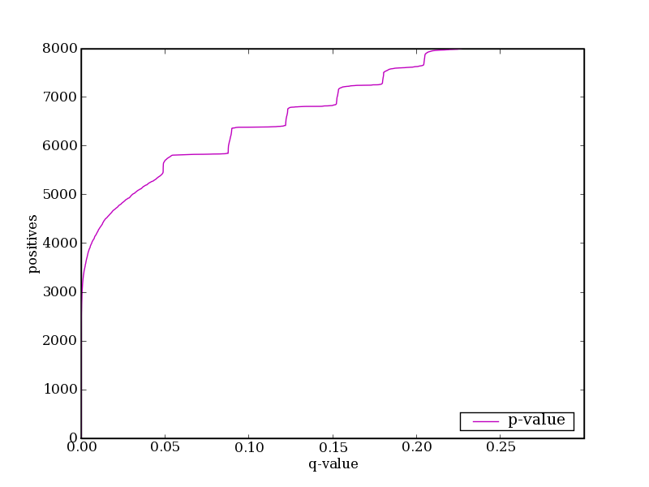
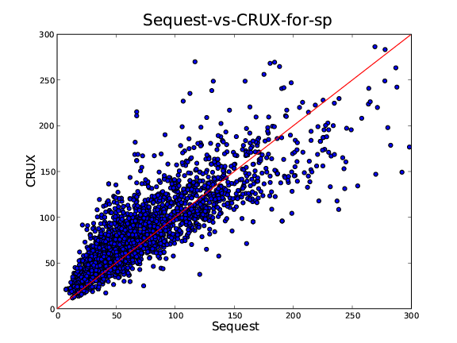
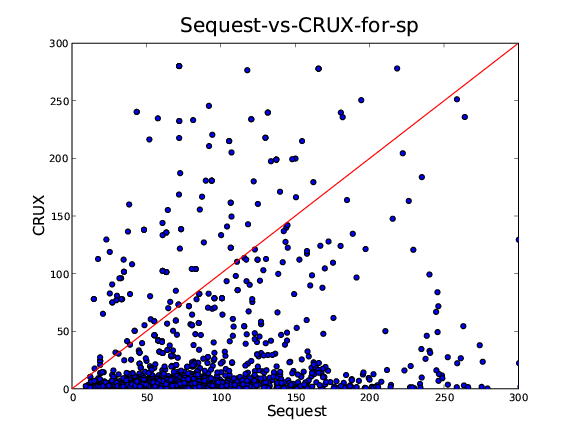
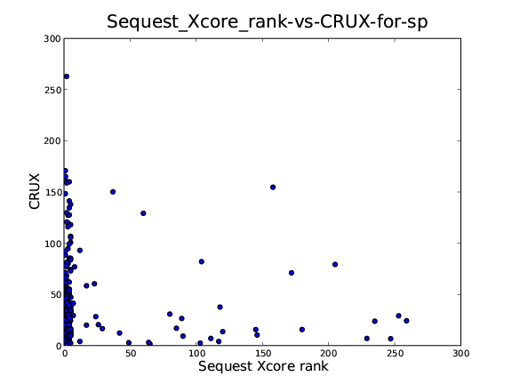
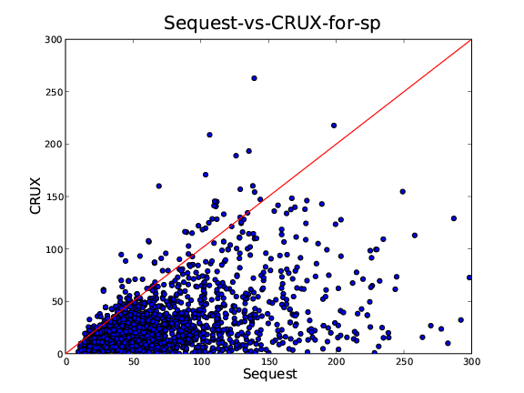
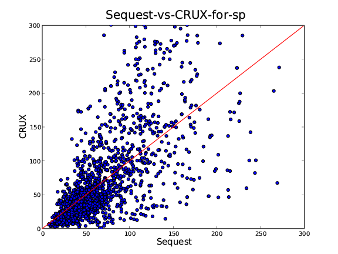

CRUX notebook
Purpose:
To test P vs. q for analytic p-values.
Results:

Discussion:
November 7, 2006
Purpose:
Try implementing the new proposed SP
scoring method described here.
make
modifications if necessary to approach Sequest sp scores.
Methods:
1.
I tried the sp scoring as proposed, here.
2. I increased the interval of the intensity_sum to +/- 2m/z.
3. Instead of adding all intensities in the window of +/-2m/z, add
only the maximum intensity peak, add deleted the BETA constant in the
Sp scoring function. Results:
Method 1. did not work, the sp scores were generally too small
compared to Sequest. The main reason I suspect is because the total
count of matched fragmented ions were smaller than what Sequest
reports in the output file. Thus, I decided to increase the mass/z
window to +/- 2 m/z. The window of +/- 2m/z is consistent to my
experiments shifting peaks around and observing the matched peak
count. Finally, the match peak count is consistent with Sequest,
however the Sp scores are too large now. I tried averaging the peaks
within the window of +/- 2m/z which still too large. The final
combination that seems to fit best with Sequest is to use only the
maximum intensity peak with in +/- 2m/z, and delete the (1+beta*n)
portion of the equation. The resulting plot is shown bellow.
Firgure.1 using a different .spt file which contained more spread Sp scores to compare.
I got this file from Aaron, var/noble.

Figure 2. the original .sqt file which I used on October 31 experiments.
Discussion &
Conclusion:
The Sp scores are still not perfect, but much improved.
I have noticed that there are some discrepancies with matched peak count with Sequest, which all peaks I believe should have been added.
Still mystery how unmatched peaks effect SP score. I have noticed Sequest prints the total intensity sum on the output file. Maybe Sequest uses the total intensity somehow...
October 31, 2006
Purpose:
To reverse engineer the sp scores from
Sequest Methods:
I
have plot the sp scores from CRUX's score_peptide_spectrum vs Sequest
sp scores.
Current method of scoring Sp, 1. process observed
spectrum Results:

No normalization, there seems to be no correlation

The Xcore rank vs CRUX score, no normalization Just to check
if my method might be better, I have plotted it against the Xscore
ranking. The result should show a negative slop, however it is not
the case. Thus, need to improve my sp score.

Normalized all the peaks to 100, by dividing with the max
intensity peak This seems to improve the sp correlation to Sequest.,
however still most values are too low.

First, remove 10u around the precursor ion, then normalize
+/- 1u around each peak to the highest peak, finally normalize all
the peaks to 100. Definatlly, seems to improve scoring. Discussion:
1. Process observed spectrum
All peaks location(m/z) are rounded to the nearest integer, although kept as float
Keep the top 200 abundant peaks, remove others
remove +/- 5u around the precursor ion
equalize the peaks to the highest peak within +/- 1u
2. Predict fragment ions, B and Y ions, use precursor ion charge as (charge - 1) .
3. For each predicted ion, add all intensities of peaks that have a m/z within +/- 1u of the fragmented ion in the processed observed spectrum.
4. Normalize the peaks to 100, this could be done in step 1, but more efficiently done by dividing the summation of the intensities by the maximum intensity peak in the observed spectrum, than multiplying by 100.
5. Calculate Sp,
Sp = Normalized_intensity_sum * ni * (1 + m*BETA) * (1 + k*GAMMA)/nt
ni = the number of predicted fragment ions that match have a matching peak within +/- 1 in the observed spectrum.
nt = the total number of predicted fragmented ions
m = continuity count of an ion series, ex, if B2 B3 B4 Y3 Y4 match, than m=3
k = the existence of immonium ion for amino acid, H,Y,W,M,F. Currently always set to 0.
BETA, GAMMA = constants
Observations & thoughts
Increasing the summation window did not help the distribution in my current implementation.
Although, Sequest seems to be adding ions within +/- 2.5u, instead of 1u as stated in the paper.
In Sequest, when the precursor ion m/z is 802.65, removing ions of interval between 787.7 and 817.6 does not change both Sp and Xcore.
This is +/- 15u, which in the paper state it removes an interval of 10u. Thus, from result of 1, seems like Sequest uses some kind of bin that is a size of 5u, such that
the removing window is 10u + the bin size (which upper and lower limit is included).
Sequest states, multi-charged fragmented ions are not considered in the scoring routine.
However, the output file for multi-charge(z) precursor ions clear shows that all charged fragmented ions are used up to z-1.
Adding a peak that has the same rounded integer m/z to the observed spectrum that has a matching fragmented ion does not change the Sequest score.
m/z intensity
for ex, 654.2 1.1 <- original match
654.2 1.1 <- peaks added
654.3 1.1 <- peaks added
Sp score unchanged.
m/z intensity
for ex, 654.2 1.1 <- original match
654.3 3.1 <- peaks added
654.4 4.1 <- peaks added
654.5 5.1 <- peaks added
Sp score equals just having listed one peak,
654.5 5.1, which has the largest intensity
=> Probably, merging all the peaks within 1u, to one peak that has the largest m/z
The exact interval is, if x.7 <= y < x.6, y is converted to x.
Mysteries of Sequest,
654.2 1.1 <- original match
657.2 1.1 <- add this peak
686.7 3.8
690.7 4.5
691.5 2.8
696.1 2.7
697.3 1.4
Causes Sequest to no longer call a fragmented ion with 695.7 m/z a match
Another case,
even though there was a peak,
728.4 1.9
in the observed spectrum, and a fragmented ion with 728.28 m/z
Sequest did no call it a match... strange
Conclusion: